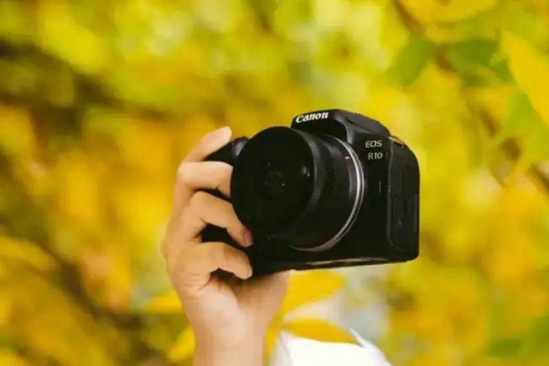

As golden autumn leaves slowly fall, nature turns soft and layered, and it shows a unique beauty. This season is not only a comfortable time to go out. It is also a sweet spot for portrait photos. Smiles in golden sunlight and the instant a light breeze passes are worth catching and recording with care. So it matters to pick a camera that is light and takes great pictures. The EOS R10 from Canon's youth mirrorless line is a good choice. It takes good photos easily and is light to carry.

Canon EOS R10
The Canon EOS R10 has an APS-C CMOS image sensor of about 24.2 megapixels. It also has Canon's well-known Dual Pixel CMOS autofocus system. It is a great fit for beginners and everyday shooting. The camera is light and affordable, so it offers strong value. It is easy to take out in autumn, and its main idea is good photos for beginners. Whether you shoot a park full of falling leaves or a dessert on a warm afternoon, the R10 handles it with ease.
Shot on EOS R10, 1/1600s, F2.8, ISO 640
Shot on EOS R10, 1/1000s, F4.0, ISO 100
Shot on EOS R10, 1/320s, F6.3, ISO 400
At the same time, the EOS R10 has built-in SCN scene modes and creative filters. They help you find the best settings fast in different shooting situations. You can take photos you like without special skills. The R10 is known as the king of photos for beginners. Its simple operation lets people new to photography start quickly and find the joy of shooting.
Shot on EOS R10, 1/600s, F2.8, ISO 400
Autumn is a season full of stories and warmth. It is a natural time for photos, and such a good time needs a camera to record it. The Canon EOS R10 is our best partner. Its light body, strong performance, and easy smart shooting features help both new photographers and experienced shooters catch great moments and freeze the beauty of autumn.